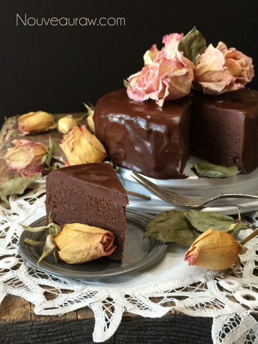

Flavor Enhancers for Chocolate

Raw cacao, regardless of what form it comes in, is very bitter all on its own. When working with such a pure ingredient, you have to know how to handle it to maximize its flavor.
- Sprinkling kosher, sea, or another exciting salt on it for a flavor contrast
- Using a small amount of white pepper will elevate the flavor but watch that you don’t use too much.
- Paprika is great for adding a rich smokiness.
- Adding orange or lemon zest
- Pairing with an unsweetened or very lightly sweetened raspberry syrup (at least in my experience fudge recipes don’t need more sugar)
- Molasses, though not raw, also will enhance the rich flavor of chocolate.
- Chili powder brings out a divine smokiness in chocolate
My favorite ~ Espresso Powder
Espresso powder is a must-have (if you ask me) ingredient if you enjoy “cooking” with chocolate. Here’s why:
- Espresso powder is chocolate’s best friend. Use 1/2 to 2 teaspoons in chocolate recipes such as; brownies, frostings, and sauces; a touch of espresso powder enhances chocolate’s flavor without adding any coffee flavor of its own.
- Ground, brewed, then dried from specially selected coffee beans, powder readily dissolves for easy mixing.
- For a mocha flavor, use 2 teaspoons or more; or use espresso powder on its own to add clean, strong coffee flavor to frostings, bars, cakes, & cookies.
- Use about 2 oz to 1 cup of batter.
When creating your own recipes and implementing some of these ideas, you will need to experiment and start with small amounts. The ideas above are meant to enhance the flavor of chocolate, not overpower it.
© AmieSue.com